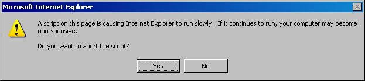

So far, we have covered the requisites and the overall structure of a XHTML 1.0 document: now let's take a look, one by one, at all the elements that will fill this structure to give a content to the document.
I have chosen the tree structure on the left to represent the full list of XHTML elements: I think this is the simplest and most effective way to visually represent the elements hierarchy of a XHTML document. It is fundamental to always keep in mind this hierarchy; in fact, as we have seen before, the XHTML syntax is much stricter than HTML: you have to pay attention not only to nesting and ending tags, but also to how elements can nest inside each other.
By clicking on any element in the tree, you will be shown a table with the list of all its attributes (except those deprecated by the Transitional DTD), their value type, their default value (if any) and some short notes on their usage. Mandatory attributes are identified by an exclamation mark ( ).
).
Clicking on "+" and "-", instead, will expand/collapse a tree node to show which elements it can contain. Of course, such a tree could branch endlessly, for instance, because of recursive nesting. Therefore, to prevent messages like the following:

from popping up, I decided to keep the tree depth at a reasonable level; after all, it should be clear that, for instance, an unordered list (<ul>) within the body element can contain the very same elements as an unordered list within a form within a div within a table cell within...